他們來過Cases
每篇案例固定寫四件事：天數、人數、減量、在地消費。方括號是尚未補上的數字，不放假數。
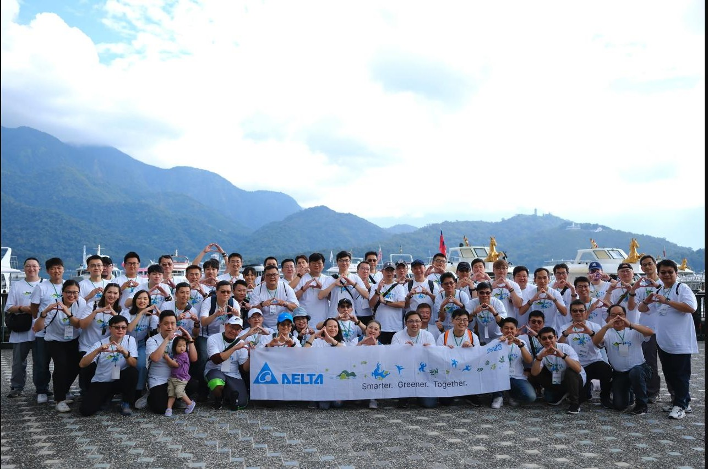
台達電子 · 企業戶外運動日兩天一夜 · [人數] 人 · 減量 [公斤] · 在地消費 [元]more ———↘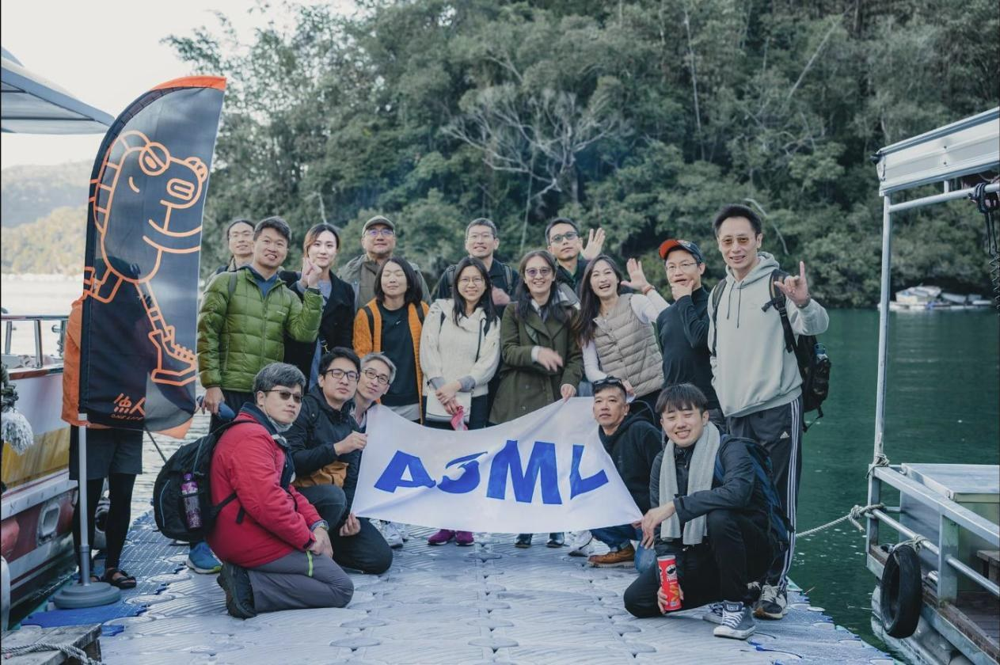
ASML · 員工旅遊 逐路船騎兩天一夜 · [人數] 人 · 減量 [公斤] · 在地消費 [元]more ———↘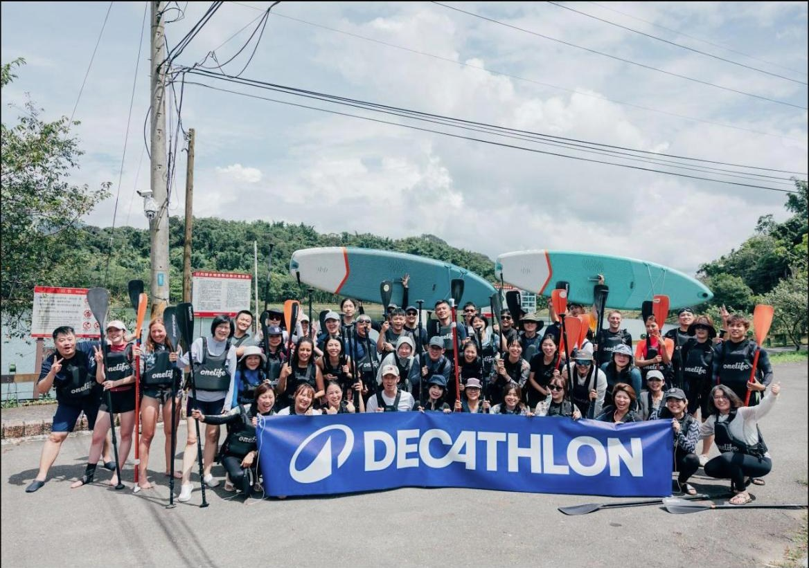
台灣迪卡儂 · SUP 企業團訓半日 · [人數] 人 · 減量 [公斤] · 在地消費 [元]more ———↘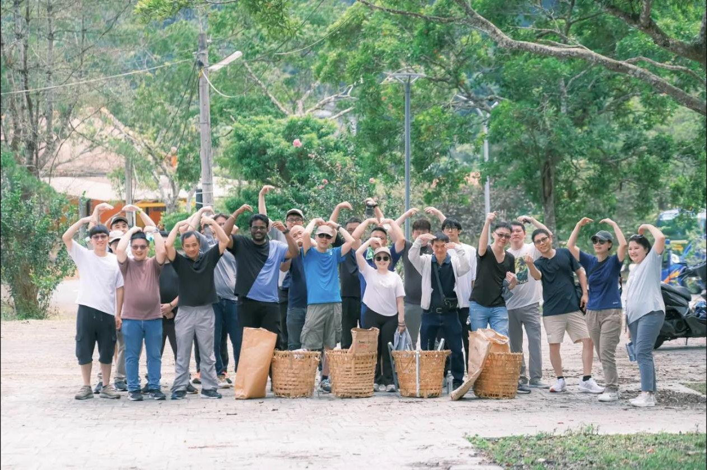
美時化學製藥 · 親清日月潭 山系一日 · [人數] 人 · 減量 [公斤] · 在地消費 [元]more ———↘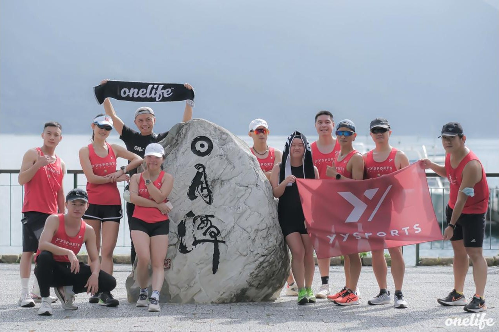
YYsports · 極限運動 逐路船騎一日 · [人數] 人 · 減量 [公斤] · 在地消費 [元]more ———↘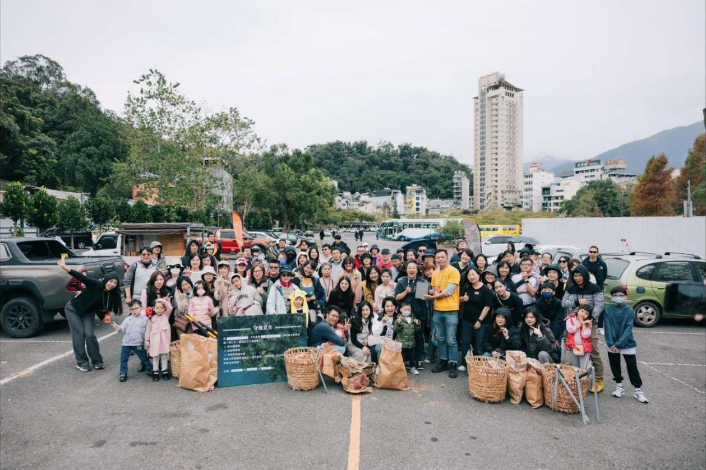
阿法拉伐 · 拾光行動半日 · 112 人 · 減量 8.3 kg（另回收 11.6 kg）more ———↘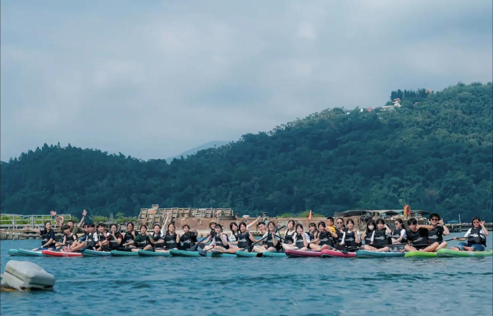
竹山高中 · 職人探索營一日 · [人數] 人 · 逐路船騎經典版more ———↘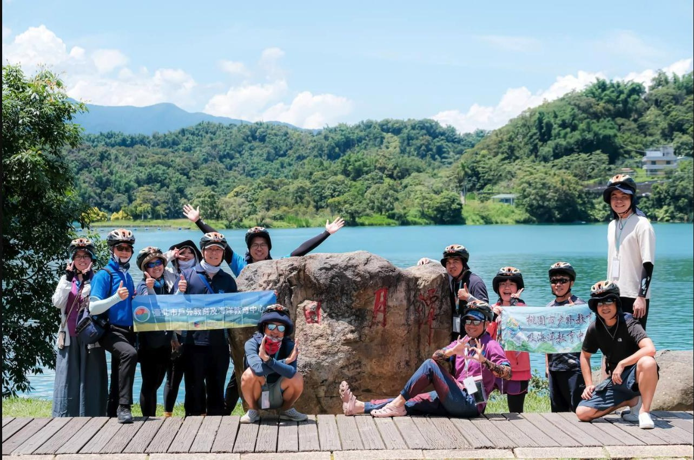
戶外教育及海洋教育中心 · 南投共學團一日 · [人數] 人 · 逐路船騎經典版more ———↘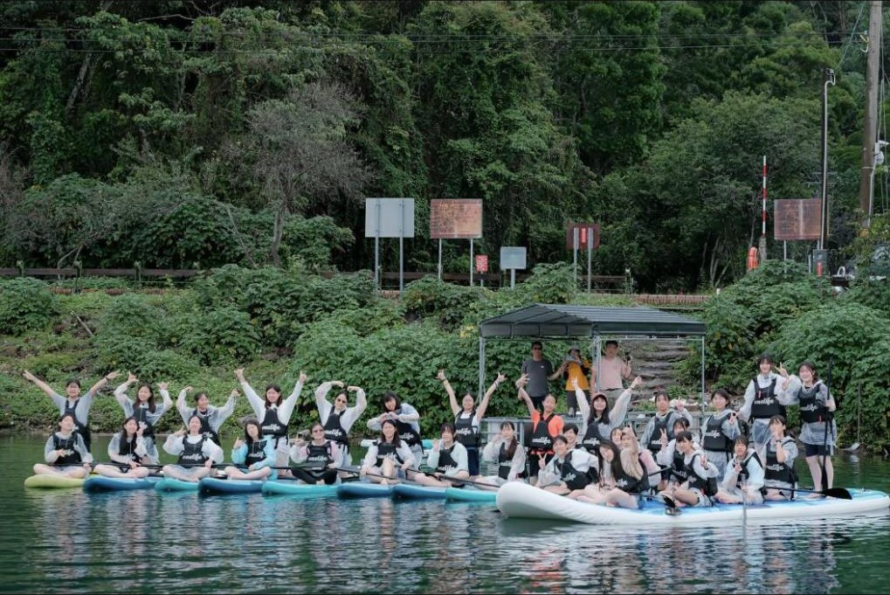
福智國中 · SUP 學生團訓半日 · [人數] 人more ———↘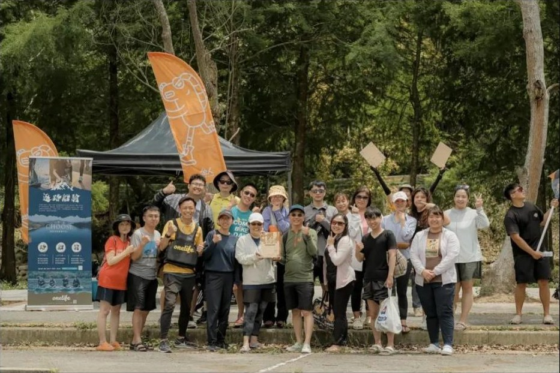
日月潭國家風景區管理處 · 逐路船騎 極限挑戰一日 · [人數] 人 · 首發團more ———↘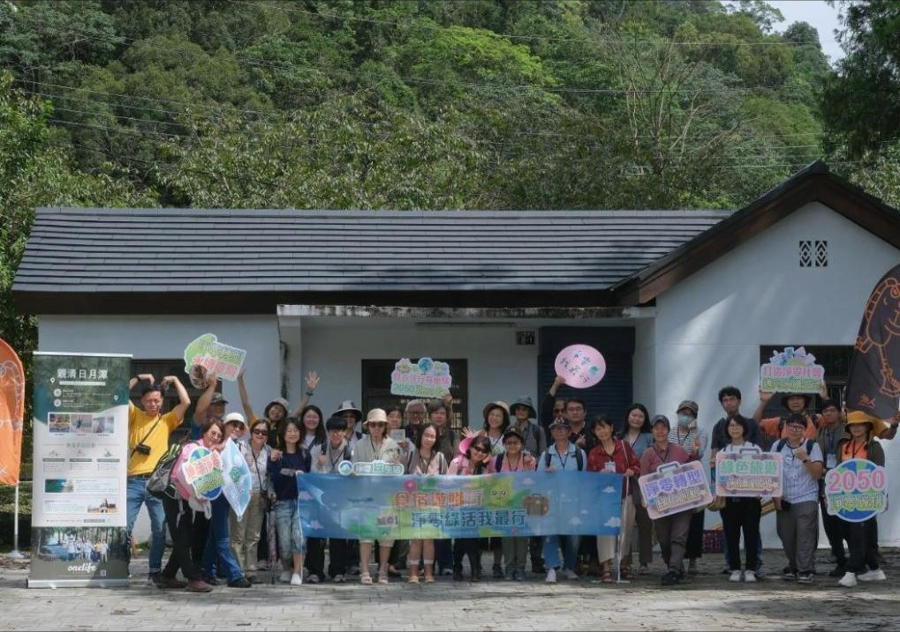
綠色旅遊示範體驗營 · 親清日月潭 山系半日 · 45 人 · 減量 5.8 kgmore ———↘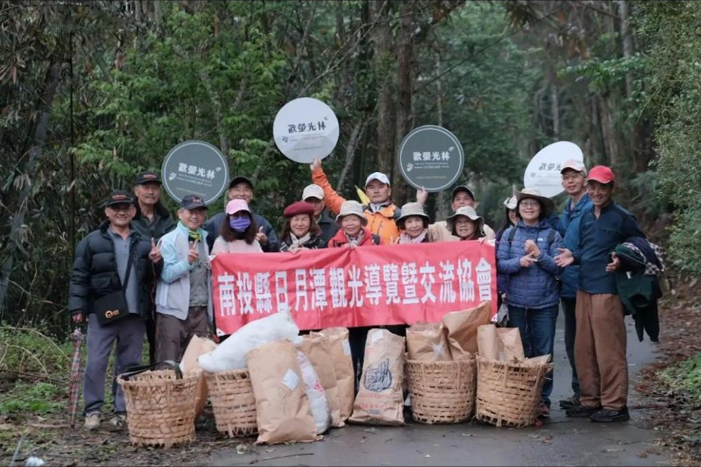
日月潭觀光導覽暨交流協會 · 賞螢環境友善行動半日 · [人數] 人 · 歡螢光林淨山more ———↘也合作過